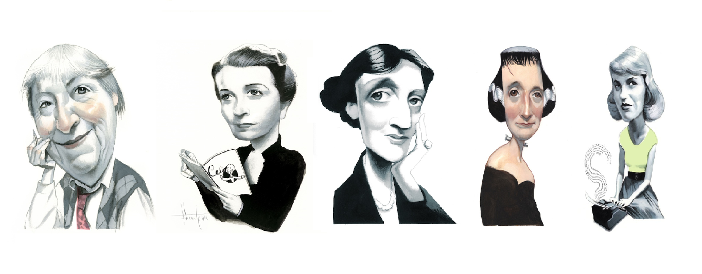
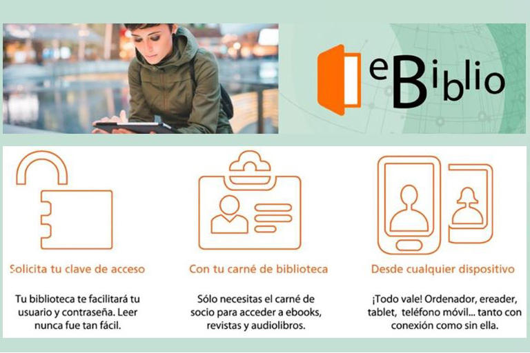
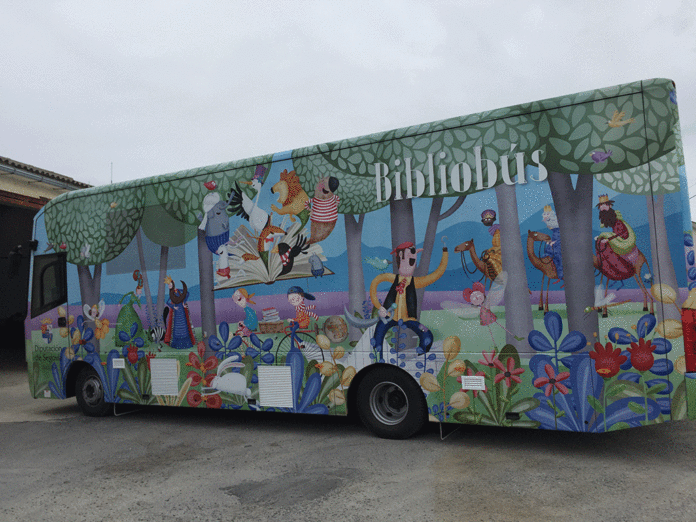
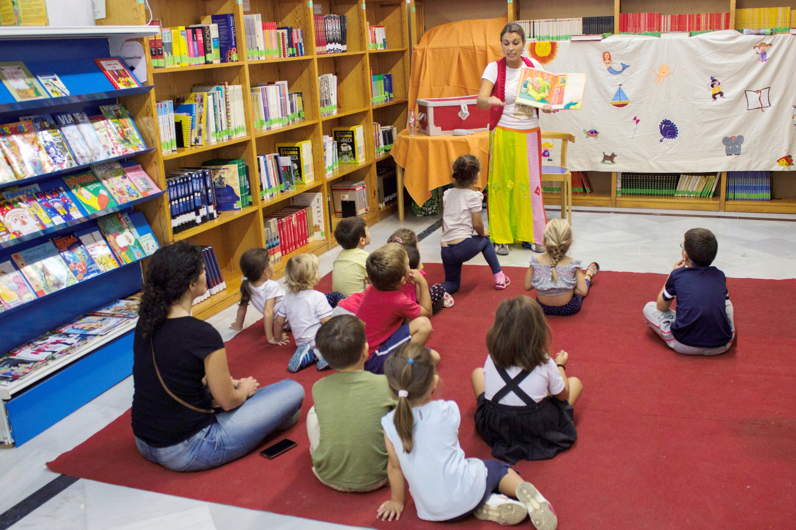
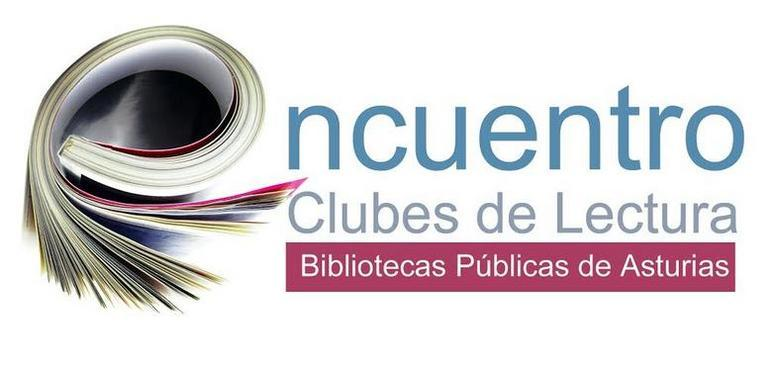

Existen algunas iniciativas innovadoras que buscan fomentar la lectura de manera creativa y atractiva para diferentes públicos, algunas de ellas son:
Algunas iniciativas utilizan las redes sociales para invitar a los usuarios a compartir lecturas y comentarios sobre los libros que están leyendo. Esto crea una comunidad virtual de lectores y fomenta la interacción entre ellos.
Lecturas en la TribuAlgunas bibliotecas ofrecen la opción de descargar libros electrónicos de manera gratuita. Esto permite que las personas puedan acceder a una gran cantidad de libros desde su dispositivo móvil en cualquier momento y lugar.
 EbiblioSon bibliotecas que se trasladan a diferentes lugares como parques, plazas, escuelas, comunidades rurales, etc. Esto permite llevar la lectura a lugares donde no hay acceso a bibliotecas y acercar los libros a las personas que no tienen la posibilidad de trasladarse a una biblioteca.
 Bibliobus de SegoviaSon personas que se dedican a crear contenido en plataformas, compartiendo reseñas, recomendaciones y reflexiones sobre los libros que han leído. Muchos booktubers han logrado crear una comunidad de seguidores que se sienten identificados con sus gustos literarios.
Raquel BruneAlgunas iniciativas buscan fomentar la lectura en voz alta para que los niños y niñas se acerquen a la literatura de manera más cercana y entretenida. Además, esto puede mejorar su comprensión lectora y ayudar a desarrollar su habilidad lingüística.
 Lector onlineSon espacios donde se puede acceder a una gran cantidad de libros de forma gratuita. Además de la disponibilidad de libros, muchas bibliotecas también organizan eventos, talleres y programas de lectura en grupo para fomentar la lectura.
Biblioteca Villa MagdalenaSon grupos de personas que se reúnen para discutir y compartir sus impresiones sobre un libro en particular. Estos grupos pueden ser presenciales o virtuales y ofrecen una oportunidad para conectarse con otros lectores y descubrir nuevas obras literarias.
 Club lecturaSon eventos en los que se reúnen editores, escritores y lectores para celebrar la literatura. Estas ferias suelen contar con una gran cantidad de stands de editoriales, presentaciones de libros y actividades relacionadas con la lectura.
LibrOviedo